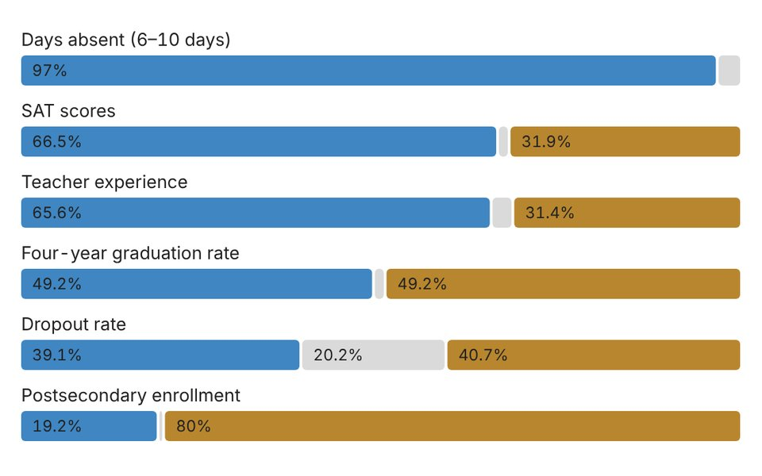
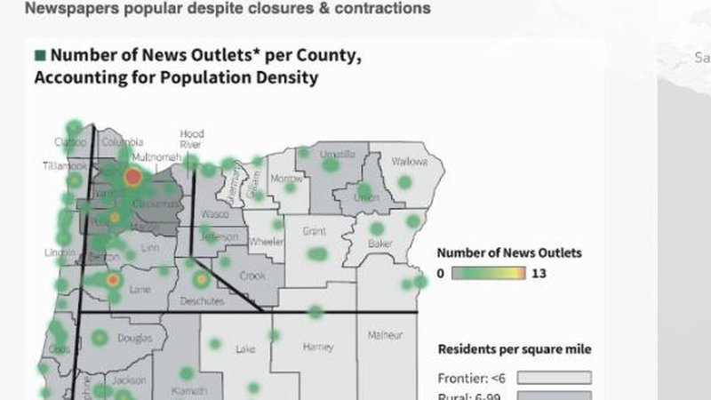
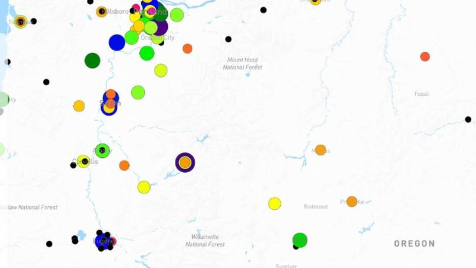

Research
Framing Psychosis: News Media, Stigma, and the Mechanisms of Public Response in Ghana
My dissertation asks how news coverage of psychosis shapes what readers believe about the illness, how they feel toward people living with it, and whether they would recommend professional help. Committee: Nikki McClaran (Chair), Leslie Steeves, S. S. Ofori-Parku, and Deepu Murty.
Study 1 is a quantitative content analysis of 332 stories from 10 Ghanaian outlets published between 2015 and 2025, coded for frames, attributions of cause and responsibility, and stigmatizing language. I built the corpus from Factiva, Nexis Uni, and web scraping, and screened it for relevance with an LLM-assisted pipeline.
Study 2 is a three-condition experiment (fear, empathy, and neutral frames) comparing two routes from a news story to stigma: how controllable readers judge the illness to be, and how they feel toward the person living with it. Stigma, in turn, shapes whether readers would recommend help.
Other projects
- Maternal mental health in Accra. How emotional framing shapes risk perception and help-seeking intentions among pregnant and new mothers. In preparation; presented at AEJMC Midwinter 2026.
- Contraceptive accessibility across Africa. Country contexts and intersectional inequalities in attitudes toward contraceptive access, using multilevel analysis of individual heterogeneity and discriminatory accuracy (MAIHDA). Under review.
- Global mental health literacy. A book chapter on why mental health literacy diverges across the world. In press, Routledge.
- Depression on video-based social media. How symptoms and treatments are depicted on short-video platforms, and what that means for health promotion practice. Under review.
Methods: quantitative content analysis, survey and experimental design, multilevel modeling (including MAIHDA), mediation analysis, in-depth interviews, and focus groups. Software: Stata, SPSS, R, jamovi, Python, and Mapbox.
Publications
Book chapter
- Romann, L. R., Shoieb, Z., Boateng, S. N., Anti, S. M., & Hintz, E. A. (in press). Explicating the divergence in worldwide mental health literacy. In V. Agarwal (Ed.), Communication and mental health in global contexts: Opportunities for transformation, representation, and social justice. Routledge.
Manuscripts under review
- Oboro-Offerie, R. A., & Anti, S. M. Country contexts and intersectional inequalities in attitudes toward contraceptive accessibility in Africa: A multilevel analysis of individual heterogeneity and discriminatory accuracy (MAIHDA) [Manuscript under review]. Studies in Family Planning.
- McClaran, N., & Anti, S. M. Depression symptoms, treatments, and depiction on video-based social media: Implications for practice [Manuscript under review]. Health Promotion Practice.
Manuscripts in preparation
- Anti, S. M. Framing maternal mental health: Emotional pathways to help-seeking in Accra, Ghana.
- Anti, S. M., & Oboro-Offerie, R. A. Media usage and attitudes toward contraceptive accessibility: Regional disparities and sociodemographic determinants among Ghanaians.
- Boateng, S. N., Anti, S. M., & Lachlan, K. Maternal health crisis in Ghana: Image restoration, the quack midwife, and the human cost of poor crisis strategies.
- Koomson, P., Ofori-Parku, S. S., Akakpo, A., & Anti, S. M. E-waste framing in Ghanaian media.
Conference presentations
- Anti, S. M. (2026, March 6–7). Framing maternal mental health: The role of emotions in risk perceptions and help-seeking intentions among pregnant and new mothers in Accra, Ghana [Paper presentation]. AEJMC Midwinter Conference, University of Oklahoma, Norman, OK, United States.
- Okyere, F., Kuwornu, A. Y., & Anti, S. M. (2026, July). Digital diplomacy, soft power and narratives from the Global South: The case of IShowSpeed's Ghana tour [Paper accepted; not presented due to travel restrictions]. IAMCR Annual Conference, Galway, Ireland.
- Anti, S. M. (2025, May 12–15). (Re)constructing mental illness: Ghanaian news media framing and how it influences public policies and perceptions [Paper presentation]. 23rd Annual International Conference on Communication and Media Studies, ATINER, Athens, Greece.
Teaching
I teach writing, reporting, and production the way they are practiced: through mock interviews, story selection, and revision. In Spring 2025, 84% of my Writing as Practice students reported that the course's approaches and inclusiveness benefited their learning.
University of Oregon
- Writing as Practice (JCOM 203), Instructor of Record — Fall 2024 to Spring 2025
- Introduction to Documentary Production (JCOM 220), Teaching Assistant — Winter 2026
- Media Professionals (JCOM 101), Teaching Assistant — Fall 2025
- Writing for Communicators (J212), Lab Instructor — Spring 2024
- Gateway to Media Studies (J211), Lab Instructor — Fall 2023 to Winter 2024
Jayee University College, Accra
- Broadcast News Reporting (JNR 243) and Radio and Television Presentation (JNR 244), Lecturer — 2009 to 2010
Prepared to teach: quantitative research methods, survey and experimental design, media effects, health and risk communication, science communication, news writing and reporting, broadcast news production, data and multimedia journalism, documentary production, and strategic communication.
Selected work

New Jersey public schools show pandemic recovery
My Columbia master's project. An analysis of 668 school districts on six performance measures found that 62% improved on most of them, while college enrollment fell almost everywhere and gains tilted toward wealthier districts.
Read the storyAgora Journalism Center, University of Oregon
Interactive maps I built for the Center's statewide assessment of Oregon's local news and information ecosystem.

Local News Ecosystem in Oregon
A scrolling map story that walks through the assessment's findings: 241 outlets producing original local news in 97 Oregon cities, how they are owned, and the counties left with one or two sources.

Oregon's Local News Media Ecosystem: Unequal Distribution
A clickable map of every outlet in the database, sized by circulation or audience and set against county population density.
Broadcast
Data journalism
Professional experience
- Research Assistant, Agora Journalism Center, University of Oregon — Summer 2024 and Spring 2026
Built interactive maps of Oregon news outlets for the Local News and Information Ecosystem project and designed information graphics for the Florence Civic Information Assessment Report. - Presenter and Anchor, Media General Ghana (TV3 and 3FM 92.7) — 2016 to 2021
Anchored Midday News and News@10, hosted Hot Issues and Agenda, and led the team covering Ghana's 2020 presidential and parliamentary elections. - News Editor, Joy News TV — 2012 to 2015
Managed the news department and anchored the nightly current affairs program PM Express. - PEPFAR Media Specialist, U.S. Embassy Accra — 2010 to 2012
Coordinated public information for the President's Emergency Plan for AIDS Relief across five U.S. agencies. - Senior Broadcast Journalist and News Editor, Joy FM — 2007 to 2010
Reported on health, mental health, education, and governance; founding producer of the documentary series Hotline.
Recognition: TV Male Newscaster of the Year, RTP Awards, 2020. Meritorious Honor Award, U.S. Embassy Accra, 2011.
Education
- Ph.D., Communication and Media Studies, University of Oregon — expected 2027
- M.S., Data Journalism, Columbia University — 2022
- M.A., Journalism Studies, Cardiff University — 2005
Contact
Email: smanti@uoregon.edu or sma2263@columbia.edu
ORCID · CV (PDF)